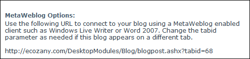

Setting MetaWeblog Options
How to view the URL to use to connect to your blog using a MetaWeblog enabled client such as Windows Live Writer or Word 2007. This can be performed by bloggers on their own blog and by Administrators on any blogs.
- Click the Blog Settings link on the New_Blog module - OR - Click the blog name on the Blog_List module and then select Edit Blog Settings from the View_Blog module actions menu. This opens the Edit Blog page.
- Go to the MetaWeblog Options section to view the URL. Change the tabID parameter as needed if this blog appears on a different tab.
- Click the Cancel button to return to the module.

Setting MetaWeblog Options